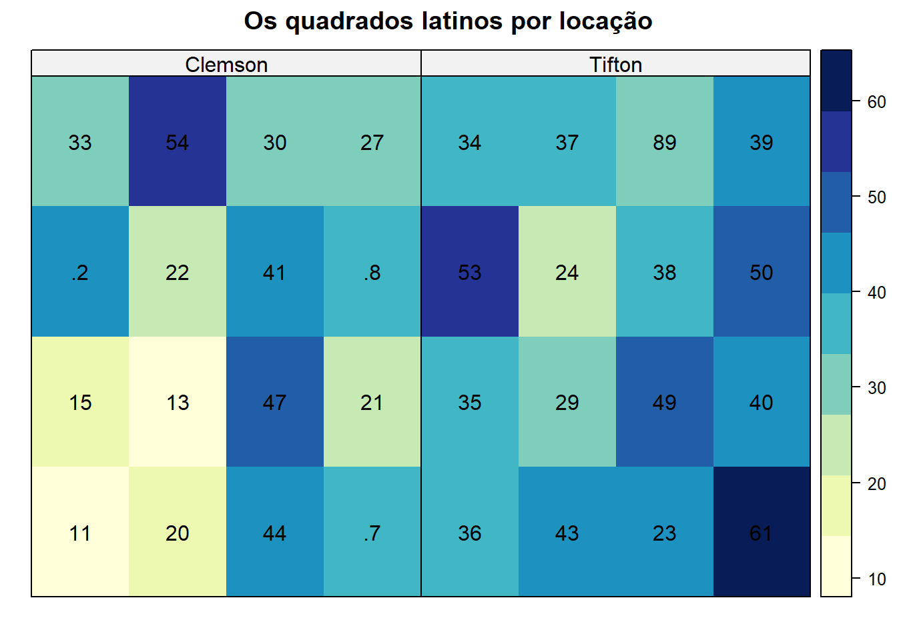
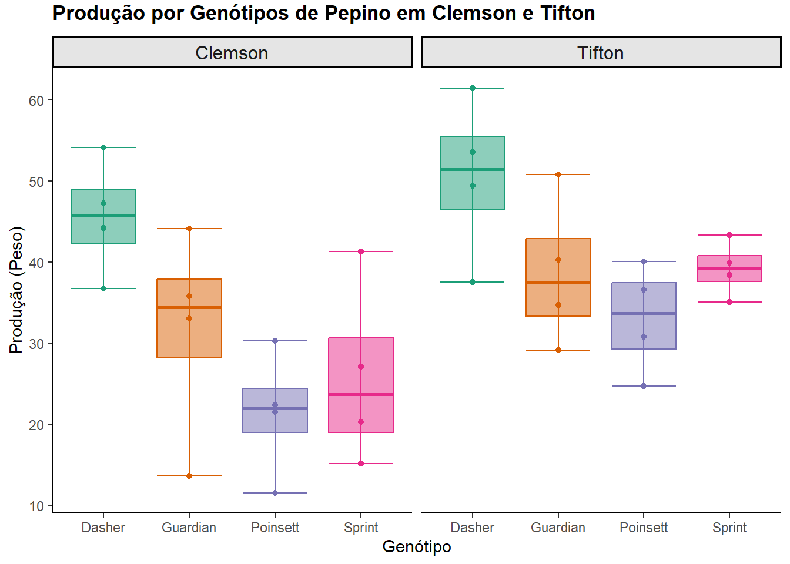

library(agridat) # banco de dados
library(dplyr) # manipulação de dados
library(kableExtra) # tabelas
library(ggplot2) # criação de gráficos
library(desplot) # criação de gráficos
library(RColorBrewer) # estética dos gráficos
library(car) # teste de homogeneidade
library(nortest) # teste de normalidade
library(lattice) # gráfico de residuosAnalisando a influência do genótipos de pepinos: Uma aplicação de design de quadrados latinos
Introdução
Esse projeto analisa um conjunto de dados públicos provenientes de um experimento agrícola realizado em 1985 em duas localidades: a Universidade de Clemson, na Carolina do Sul, e Tifton, na Geórgia. O experimento seguiu um desenho em Quadrado Latino e foi aplicado em mais de uma localidade. Esse tipo de configuração permite considerar as diferenças ambientais que podem impactar os resultados, proporcionando análises estatísticas mais precisas e quantificando os efeitos desses ambientes.
O Design em Quadrado Latino é uma técnica utilizada para controlar variações conhecidas ou desconhecidas em um campo experimental, como, por exemplo, diferenças na condição do solo, proximidade com estradas ou posição em relação ao sol. Ele organiza os tratamentos de forma equilibrada para reduzir o impacto dessas variações.
Neste projeto, os dados serão analisados de duas formas:
- Análise separada por localidade: cada local será tratado como um experimento independente para demonstrar como analisar dados de um Quadrado Latino.
- Análise conjunta das localidades: os dados de ambas as localidades serão analisados juntos, considerando os efeitos ambientais e aleatórios.
O Modelo
A fórmula para o modelo de Quadrado Latino pode ser escrita da seguinte forma:
\[Y_{ijk} = \mu + \tau_i + \beta_j + \alpha_k + \epsilon_{ijk}\]
Onde:
- \(\mu\) = Média Geral
- \(\tau_i\) = Efeito do Tratamento
- \(\beta_j\) = Efeito do Bloco-1
- \(\alpha_k\) = Efeito do Bloco-2
- \(\epsilon_{ijk}\) = Erro Aleatório
Onde:
- i = Número de tratamentos
- j = Número de blocos-1
- k = Número de blocos-2
Anova
Para avaliar a variabilidade nos dados foi aplicado Anova. No contexto de experimentos agrícolas ou biológicos, como o delineamento em quadrados latinos, a ANOVA é particularmente útil porque permite avaliar o efeito de tratamentos (como genótipos de plantas) enquanto controla a variabilidade em duas direções diferentes: linhas e colunas. Essa estrutura elimina possíveis vieses associados à heterogeneidade ambiental que poderiam interferir nos resultados, como variações no solo ou na luminosidade.
No caso de um delineamento de quadrados latinos aplicado ao rendimento de diferentes genótipos de pepinos em duas localizações, a ANOVA ajuda a responder perguntas importantes, como:
- Os genótipos diferem significativamente em termos de rendimento médio?
- As variações entre linhas e colunas influenciam os resultados?
- O erro experimental está devidamente controlado?
Pressupostos
1. Variação Aleatória
- Os tratamentos são atribuídos aleatoriamente em linhas e colunas, mas de forma balanceada.
- \(\sum_{i=1}^{n} \tau_i = 0\) (soma dos efeitos dos tratamentos é zero).
2. Independência dos Erros
- Os erros \(\epsilon_{ijk}\) devem ser independentes entre si.
- \(\text{Cov}(\epsilon_{ijk}, \epsilon_{i'j'k'}) = 0\) para \((i,j,k) \neq (i',j',k')\).
3. Normalidade dos Erros
- Os erros são normalmente distribuídos com média zero e variância constante.
- \(\epsilon_{ijk} \sim N(0, \sigma^2)\), onde \(\sigma^2\) é a variância.
4. Homogeneidade de Variâncias (Homoscedasticidade)
- A variância dos erros é constante em todos os tratamentos, linhas e colunas.
- \(\text{Var}(\epsilon_{ijk}) = \sigma^2\) para todos os \(i, j, k\).
Pacotes utilizados
Dados
data <- agridat::bridges.cucumber
str(data)'data.frame': 32 obs. of 5 variables:
$ loc : Factor w/ 2 levels "Clemson","Tifton": 1 1 1 1 1 1 1 1 1 1 ...
$ gen : Factor w/ 4 levels "Dasher","Guardian",..: 1 1 1 1 2 2 2 2 3 3 ...
$ row : int 1 2 3 4 1 2 3 4 1 2 ...
$ col : int 3 4 2 1 4 2 1 3 1 3 ...
$ yield: num 44.2 54.1 47.2 36.7 33 13.6 44.1 35.8 11.5 22.4 ...Análise exploratória dos dados
| Variável | Desçrição |
|---|---|
| loc | As duas localidades envolvidas nesta pesquisa são Clemson e Tifton. |
| gen | Os quatro genótipos de pepino: Dasher, Guardian, Sprint, Poinsett. |
| row | O identificador da linha da observação. |
| col | O identificador da coluna da observação. |
| yield | Peso dos frutos comercializáveis por parcela. |
Há quatro repetições de genótipos por localização, de forma que ambas localizações possuem o mesmo layout e aleatoriedade, tornando possivel a comparação.

Considerando o gráfico, percebe-se que o rendimento é maior no layout da localização de Clemson.

Observando o boxplot é possivel perceber intuitivamente alguns fatos:
- Poinsett parece ser consistentemente o genótipo com menor produção, independente da localização;
- Desempenho superior do genótipo Dasher em ambas as localizações;
- A variação total é maior em Clemson para a maioria dos genótipos (Guardian em especial), sugerindo maior sensibilidade aos fatores ambientais;
- Em Tifton, os genótipos mostram distribuições mais concentradas.